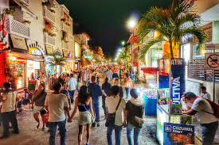

Playa del Carmen es un balneario costero de México que se ubica a lo largo de la costa caribeña de la Riviera Maya, en la Península de Yucatán. Pertenece al estado de Quintana Roo y es famosa por sus playas bordeadas de palmeras y los arrecifes de coral. La Quinta Avenida peatonal se extiende en paralelo a la playa, con cuadras de tiendas, restaurantes y clubes nocturnos que van desde bares relajados hasta clubes de baile.
El clima del municipio es cálido subhúmedo con lluvias en el verano de mayor humedad. La temperatura media anual es de 25.8°C, las temperaturas más bajas se registran en el mes de enero con 13°C y las máximas se alcanzan en el mes de agosto con 32.9°C. Los vientos predominantes son los del sureste. La precipitación pluvial anual se encuentra en 1,331.2 milímetros con estación de lluvia de junio a noviembre.
El clima se ve afectado por los Ciclones o Huracanes, que aumentan la precipitación sobre todo en el verano. La temporada de Huracanes se extiende del 1 de junio al 30 de noviembre de cada año.
En el municipio donde se localiza Playa del Carmen la flora se conforma de selva mediana subperennifolia y subcaducifolia, y selva baja subperennifolia, que son particularmente valiosas para la explotación forestal debido a la presencia de maderas preciosas como la caoba y el cedro. Por otra parte, en zonas próximas a las áreas inundables y al mar se han desarrollado comunidades de manglares, aunque la superficie que ocupan es relativamente pequeña. La zona costera posee manchones de vegetación de dunas.
Hay muchas razones para amar la Quinta Avenida en Playa del Carmen, es que sus más de 3 kilómetros de distancia albergan restaurantes, bares, plazas comerciales, hoteles boutique, tiendas de artesanía, ropa, zapatos, accesorios, maquillaje y un sinfín de artículos que puedes hallar sobre esta zona turística.
En la Quinta Avenida no permiten bicicletas, ni patinetas y ningún tipo de transportación, por lo tanto, te recomendamos llevar zapatos cómodos para recorrerla y ¡a disfrutar el paseo!
En la Quinta Avenida y Juárez está el Parque Fundadores. Aquí hay una parada obligatoria para aquellos instagramers, pues tomarte la foto en El Portal Maya es casi un requisito al estar en el corazón de la Riviera Maya.
Es el parque temático más famoso de México. Abierto en 1990, Xcaret es una de las cosas que debes visitar en la Riviera Maya. En una ubicación privilegiada a orillas del azul-turquesa mar Caribe este parque ofrece: Espectáculos en vivo, atracciones acuáticas y una interacción directa con la naturaleza; plantas y animales.
El parque tiene 80 hectáreas repletas con actividades y atracciones, por lo que un día es insuficiente para recorrerlo por completo.
El método más barato para comprar tus boletos es en el sitio oficial con antelación. Llega muy temprano. El parque abre a las 8:30 am, si llegas a las 8:00 am tendrás más tiempo. Planea bien tu visita, un día no es suficiente para visitar todo el parque, pero es suficiente para ver sus mayores atractivos, así que haz una lista de los sitios que realmente quieres ver y checa sus horarios.